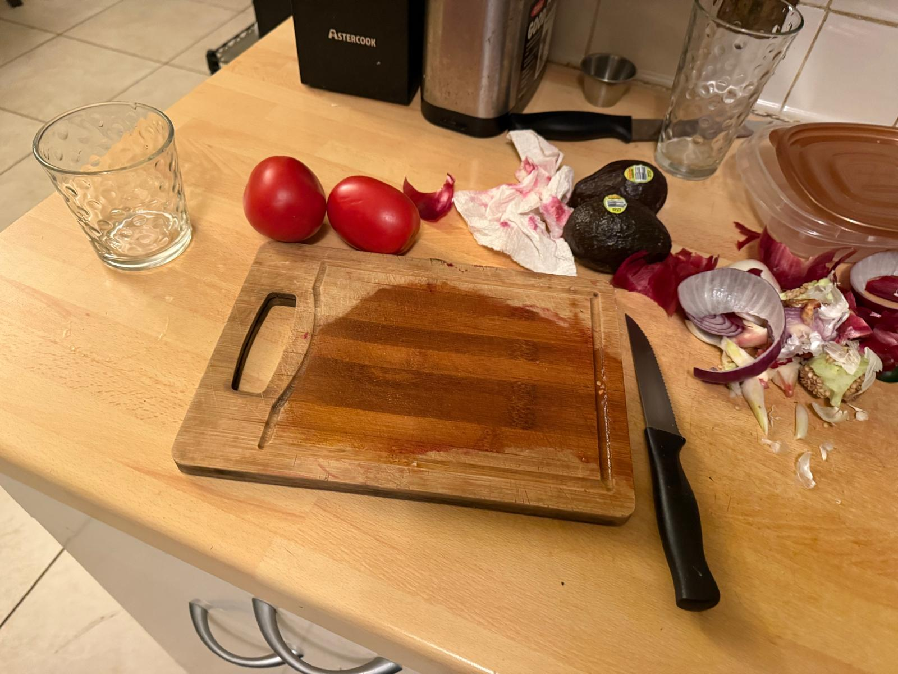

A veggie burrito is a delicious and satisfying meal packed with fresh, flavorful ingredients. It typically consists of a soft flour tortilla filled with a combination of rice, beans, grilled or sautéed vegetables like bell peppers, onions, and zucchini, as well as fresh toppings such as lettuce, tomatoes, avocado, and salsa. Some variations include cheese, sour cream, or a drizzle of spicy sauce for extra flavor. The beauty of a veggie burrito lies in its versatility, as it can be customized to suit different tastes and dietary preferences. Whether enjoyed as a quick lunch or a hearty dinner, this plant-based dish is both nutritious and full of bold, savory flavors.
Take your beans and start boiling. Boil for 45 minutes

Cut your vegetables, cut your avocado, tomatoes, onions
Cut up fajita veggies and fry them using a pan

Start forming your burrito

Let them cook and enjoy!!!